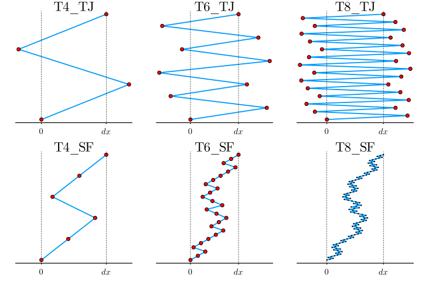
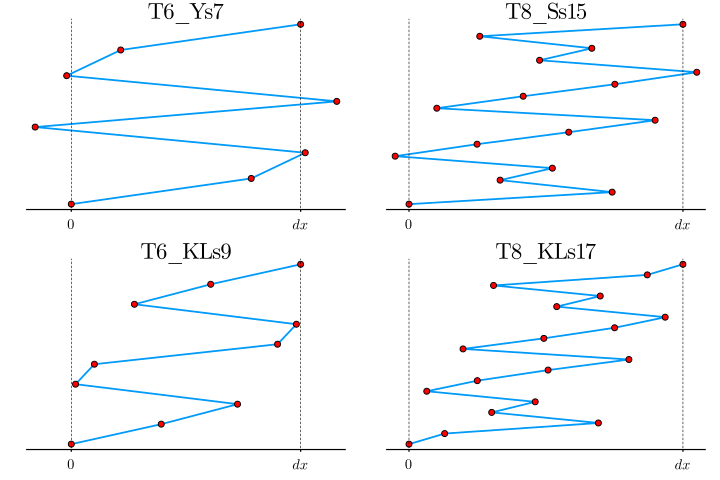

Visualization
Recipes
NonlinearSchrodinger.jl provides recipes for Plots.jl to make plotting easy. You can simply call any plotting function on a ::Sim or ::Calc object, as shown in the examples pages.
Visualizing Algorithms
We can visualize the time-stepping of the algorithms graphically as follows. We first have to figure out the coefficients of the integrators, which is straightforward from the literature (see the paper) or the code
function coeff_dict()
d = Dict()
####################################
s = 3
p = 2
γ = zeros(1,s)
γ[1] = 1/(2-2^(1/(p+1)))
γ[2] = -γ[1]*2^(1/(p+1))
γ[3] = γ[1]
push!(d, :T4_TJ=> γ)
####################################
sp = 3
s = sp^2
p = 4
γ = zeros(1,s)
γp = zeros(1,sp)
γp[1] = 1/(2-2^(1/(p-1)))
γp[2] = -γp[1]*2^(1/(p-1))
γp[3] = γp[1]
γ[1:3] = 1/(2-2^(1/(p+1)))*γp[1:3]
γ[4:6] = -2^(1/(p+1))*γ[1:3]
γ[7:9] = γ[1:3]
push!(d, :T6_TJ=> γ)
####################################
spp = 3
sp = spp^2
s = spp^3
p = 8
γ = zeros(1,s)
γp = zeros(1,sp)
γpp = zeros(1,spp)
γpp[1] = 1/(2-2^(1/(p-3)))
γpp[2] = -γpp[1]*2^(1/(p-3))
γpp[3] = γpp[1]
γp[1:3] = 1/(2-2^(1/(p-1))).*γpp[1:3]
γp[4:6] = -2^(1/(p-1))*γp[1:3]
γp[7:9] = γp[1:3]
γ[1:9] = 1/(2-2^(1/(p+1)))*γp[1:9]
γ[10:18] = -2^(1/(p+1))*γ[1:9]
γ[19:27] = γ[1:9]
push!(d, :T8_TJ=> γ)
####################################
s = 5
p = 2
γ = zeros(1,s)
γ[1] = 1/(4-4^(1/(p+1)))
γ[2] = γ[1]
γ[3] = -γ[1]*4^(1/(p+1))
γ[4] = γ[1]
γ[5] = γ[1]
push!(d, :T4_SF=> γ)
####################################
sp = 5
s = sp^2
p = 4
γ = zeros(1,s)
γp = zeros(1, sp)
γp[1] = 1/(4-4^(1/(p-1)))
γp[2] = γp[1]
γp[3] = -γp[1]*4^(1/(p-1))
γp[4] = γp[1]
γp[5] = γp[1]
γ[1:5] = 1/(4-4^(1/(p+1)))*γp[1:5]
γ[6:10] = γ[1:5]
γ[11:15] = -4^(1/(p+1))*γ[1:5]
γ[16:20] = γ[1:5]
γ[21:25] = γ[1:5]
push!(d, :T6_SF=> γ)
####################################
spp = 5
sp = spp^2
s = spp^3
p = 6
γ = zeros(1,s)
γp = zeros(1, sp)
γpp = zeros(1, spp)
γpp[1] = 1/(4-4^(1/(p-3)))
γpp[2] = γpp[1]
γpp[3] = -γpp[1]*4^(1/(p-3))
γpp[4] = γpp[1]
γpp[5] = γpp[1]
γp[1:5] = 1/(4-4^(1/(p-1)))*γpp[1:5]
γp[6:10] = γp[1:5]
γp[11:15] = -4^(1/(p-1))*γp[1:5]
γp[16:20] = γp[1:5]
γp[21:25] = γp[1:5]
γ[1:25] = 1/(4-4^(1/(p+1)))*γp[1:25]
γ[26:50] = γ[1:25]
γ[51:75] = -4^(1/(p+1))/(4-4^(1/(p+1)))*γp[1:25]
γ[76:100] = γ[1:25]
γ[101:125] = γ[1:25]
push!(d, :T8_SF=> γ)
####################################
s = 7
γ = zeros(1,s)
γ[1] = 0.78451361047755726381949763
γ[2] = 0.23557321335935813368479318
γ[3] =-1.17767998417887100694641568
γ[4] = 1.31518632068391121888424973
γ[7] = γ[1]
γ[6] = γ[2]
γ[5] = γ[3]
push!(d, :T6_Ys7 => γ)
###################################
s = 9
γ = zeros(1, s)
γ[1] = 0.39216144400731413927925056
γ[2] = 0.33259913678935943859974864
γ[3] = -0.70624617255763935980996482
γ[4] = 0.08221359629355080023149045
γ[5] = 0.79854399093482996339895035
γ[9] = γ[1]
γ[8] = γ[2]
γ[7] = γ[3]
γ[6] = γ[4]
push!(d, :T6_KLs9 => γ)
##################################
s = 14
γ = zeros(1,s)
γ[1] = 0.392256805238773
γ[2] = γ[1]
γ[13] = γ[1]
γ[14] = γ[1]
γ[3] = 0.1177866066796810
γ[4] = γ[3]
γ[11] = γ[3]
γ[12] = γ[3]
γ[5] = -0.5888399920894384
γ[6] = γ[5]
γ[9] = γ[5]
γ[10] = γ[5]
γ[7] = 0.6575931603419684
γ[8] = γ[7]
push!(d, :T6_Ss14 => γ)
##################################
s = 15
γ = zeros(1,s)
γ[1] = 0.7416703643506129534482278
γ[2] = -0.409100825800031593997300
γ[3] = 0.1907547102962383799538763
γ[4] = -0.5738624711160822666563877
γ[5] = 0.2990641813036559238444635
γ[6] = 0.3346249182452981837849580
γ[7] = 0.3152930923967665966320567
γ[8] = -0.7968879393529163540197888
γ[9] = γ[7]
γ[10] = γ[6]
γ[11] = γ[5]
γ[12] = γ[4]
γ[13] = γ[3]
γ[14] = γ[2]
γ[15] = γ[1]
push!(d, :T8_Ss15 => γ)
##################################
s = 17
γ = zeros(1,s)
γ[1] = 0.13020248308889008087881763
γ[2] = 0.56116298177510838456196441
γ[3] = -0.38947496264484728640807860
γ[4] = 0.15884190655515560089621075
γ[5] = -0.39590389413323757733623154
γ[6] = 0.18453964097831570709183254
γ[7] = 0.25837438768632204729397911
γ[8] = 0.29501172360931029887096624
γ[9] = -0.60550853383003451169892108
γ[17] = γ[1]
γ[16] = γ[2]
γ[15] = γ[3]
γ[14] = γ[4]
γ[13] = γ[5]
γ[12] = γ[6]
γ[11] = γ[7]
γ[10] = γ[8]
push!(d, :T8_KLs17 => γ)
##################################
return d
endcoeff_dict (generic function with 1 method)
Then we plot them
using Plots
using LaTeXStrings
function plot_algo(algo)
d = coeff_dict()
γ = d[algo]
s = length(γ)
y = range(0, stop=1, length=s+1)
x = zeros(1, s+1)
x[2:end] = [sum(γ[1:i]) for i in 1:s]
if algo === :T8_SF
ms = 0.7
else
ms = 3
end
plot(x', y, marker=:circ, linewidth=1.5, markersize=ms, dpi=120, label="", markercolor=:red)
plot!([0], seriestype=:vline, linestyle=:dash, label="", linewidth=0.5, linecolor=:black)
plot!([1], seriestype=:vline, linestyle=:dash, label="", linewidth=0.5, linecolor=:black)
title!(string(algo))
plot!(grid=false, xtick=([0, 1], [L"0", L"dx"]), ytick=[], yaxis=false, fontfamily="Computer Modern", titlefontsize=12, tickdir=:out)
end
p1 = plot_algo(:T4_TJ)
p2 = plot_algo(:T6_TJ)
p3 = plot_algo(:T8_TJ)
p4 = plot_algo(:T4_SF)
p5 = plot_algo(:T6_SF)
p6 = plot_algo(:T8_SF)
p7 = plot_algo(:T6_Ys7)
p8 = plot_algo(:T6_KLs9)
p9 = plot_algo(:T6_Ss14)
p10 = plot_algo(:T8_Ss15)
p11 = plot_algo(:T8_KLs17)
p1 = plot(p1, p2, p3, p4, p5, p6, link=:x)
p2 = plot(p7, p10, p8, p11, link=:x)/home/runner/.julia/packages/GR/G9I5v/src/../deps/gr/bin/gksqt: error while loading shared libraries: libQt5Widgets.so.5: cannot open shared object file: No such file or directory connect: Connection refused GKS: can't connect to GKS socket application GKS: Open failed in routine OPEN_WS GKS: GKS not in proper state. GKS must be either in the state WSOP or WSAC in routine ACTIVATE_WS /home/runner/.julia/packages/GR/G9I5v/src/../deps/gr/bin/gksqt: error while loading shared libraries: libQt5Widgets.so.5: cannot open shared object file: No such file or directory connect: Connection refused GKS: can't connect to GKS socket application GKS: Open failed in routine OPEN_WS GKS: GKS not in proper state. GKS must be either in the state WSOP or WSAC in routine ACTIVATE_WS
 
Visualizing Recursion
We can visualize the DT recursion as follows. We acknowledge the major assistance provided by Simon Schoelly (@simonschoelly) in writing this code.
using LightGraphs, MetaGraphs, Plots, GraphRecipes, LaTeXStrings
default(size=(1000,1000))
function gen_rec_graph(N, pal)
function DT_recurse(n, p, g, N, pal)
if !haskey(g[:name], (n, p)) # if there is not already a node with name (n, p)
# add a new vertex and set it's name to (n, p)
# the most recent added vertex always has the index nv(g)
add_vertex!(g)
set_prop!(g, nv(g), :name, (n, p))
set_prop!(g, nv(g), :size, N)
set_prop!(g, nv(g), :col, pal[N])
end
if n != 1
# recurse as usual
DT_recurse(n-1, 1, g, N-1, pal)
DT_recurse(n-1, p+1, g, N-1, pal)
# at this point, the vertices with the names (n, p), (n-1, 1) and (n-1, p+1) already exist
# so we look them up by their name
v1 = g[(n, p), :name]
v2 = g[(n-1, 1), :name]
v3 = g[(n-1, p+1), :name]
# add edges (n, p) -> (n-1, 1) and (n, p) -> (n-1, p+1)
add_edge!(g, v1, v2)
add_edge!(g, v1, v3)
end
return nothing
end
g = MetaDiGraph() # empty graph
set_indexing_prop!(g, :name) # allows one to look up nodes by the attribute :name
DT_recurse(N, 1, g, N, pal)
return g
end
N = 4
pal = palette(:heat, Int(floor(1.5*N)))
g = gen_rec_graph(N, pal)
using Random
Random.seed!(320) # this guarantrees fixed placement of the nodes in the plot, not mandatory
p = graphplot(g, names = [latexstring(get_prop(g, v, :name)) for v in vertices(g)],
arrow=:arrow,
nodeshape=:circle,
curvature_scalar=0.0,
nodeweights=[get_prop(g, v, :size) for v in vertices(g)],
markercolor=[get_prop(g, v, :col) for v in vertices(g)],
fontsize=14,
markersize=0.04,
linewidth=2,
method=:tree,
curves=false)/home/runner/.julia/packages/GR/G9I5v/src/../deps/gr/bin/gksqt: error while loading shared libraries: libQt5Widgets.so.5: cannot open shared object file: No such file or directory connect: Connection refused GKS: can't connect to GKS socket application GKS: Open failed in routine OPEN_WS GKS: GKS not in proper state. GKS must be either in the state WSOP or WSAC in routine ACTIVATE_WS